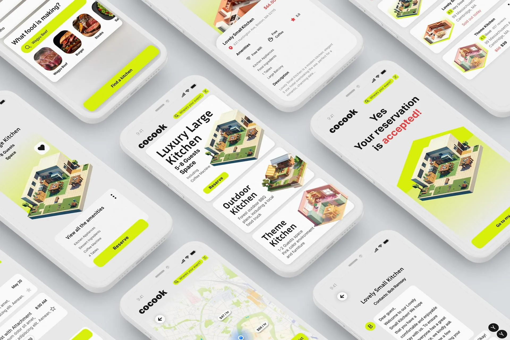
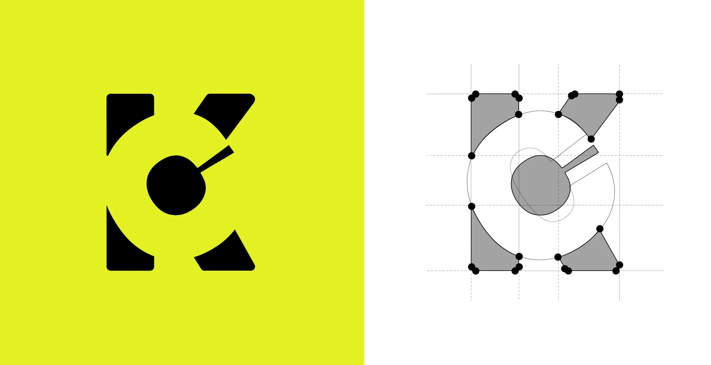
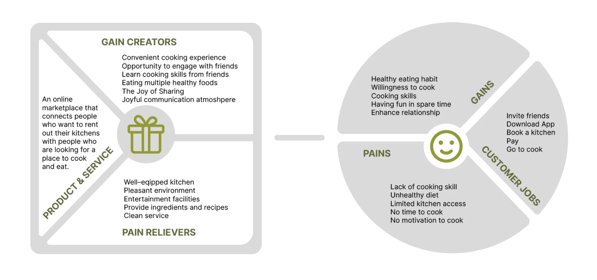
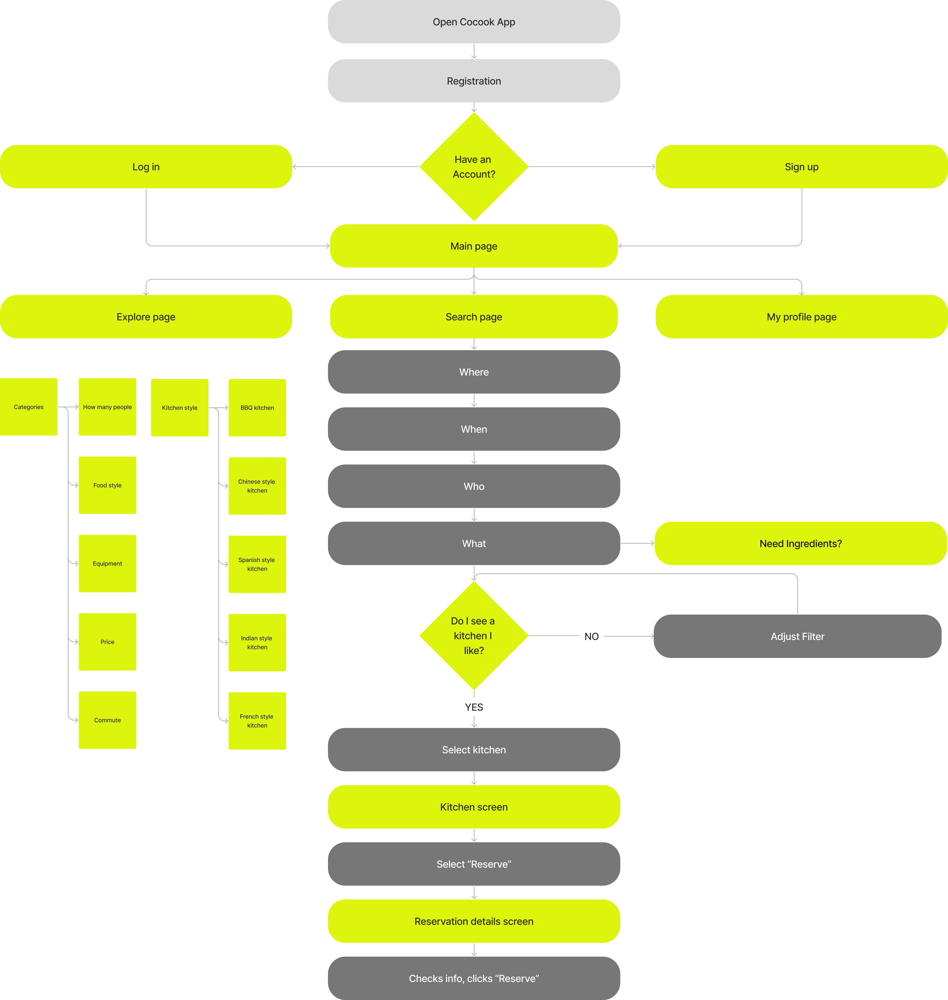
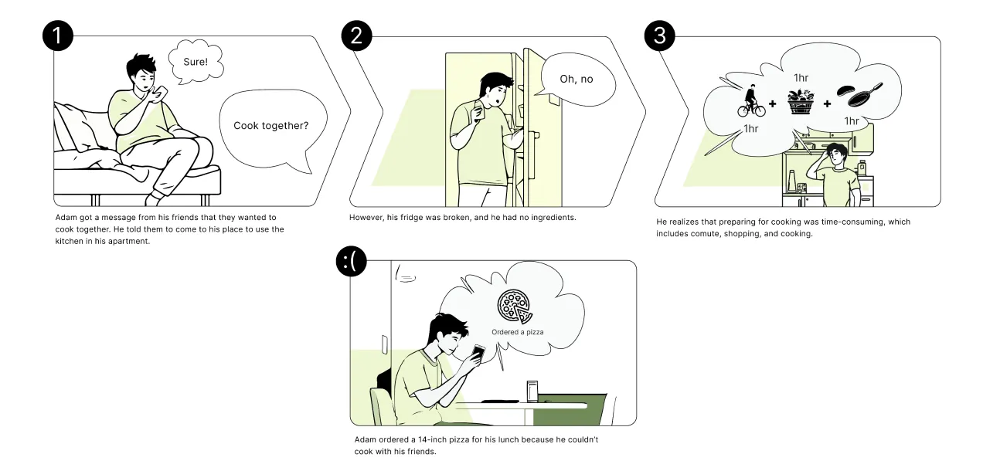
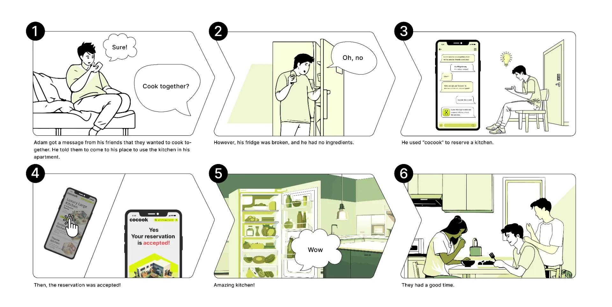
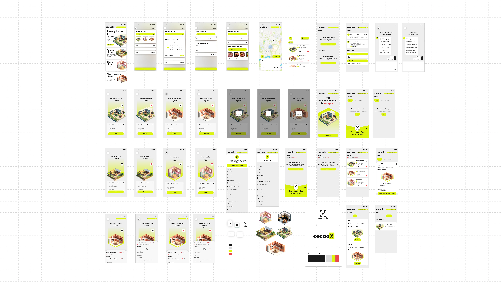

Cocook
Innovative DIY Cooking Platform, No More Excuses For Cooking.

Innovative DIY Cooking Platform, No More Excuses For Cooking.
A platform that lowers the boundary of cooking by renting DIY kitchen rooms with fully equipped facilities. We encourage young adults to enjoy cooking and socialize with friends without the hassle of prep and cleaning.

UI Designer
- Name: Xian-Hao (Harry) Liao
- Date: Fall 2023
- Class: UI/UX Design
- Tools: Figma, Illustrator, Photoshop
The Problem
What Are The Challenges Young Adults In Boston Face When Pursuing A Nutritionally Balanced Lifestyle?
Limited Cooking Experience
Young adults lack the skills and confidence to cook real meals from scratch at home.
Inadequate Kitchen Facilities
73% of surveyed users share a kitchen—cramped, under-equipped, and uninspiring spaces kill creativity.
Lack of Food Knowledge
Without proper guidance and interactive tutorials, learning to cook feels overwhelming and inaccessible.
User Research
Understand User Scenarios

Value Proposition Canvas
Cocook can be an online marketplace that lets property owners rent out their kitchens to people looking for a place to cook and eat together
For multiple people to share
- A shared space with a private dining room and entertainment facilities
- Multiple kitchen themes and unique styles
- A per-person basis self-service ingredients area & healthy recipe service
- Clean service
- Learn about nutrition
- Enjoy a hassle-free experience with no grocery shopping, no cleanup, and no expensive classes
Design Concept
Key Features
- Advanced Filters and Sorting: Robust filtering by location, amenities, and more for tailored searches.
- Detailed Information Display: Comprehensive details using fly-out panels and expandable cards.
- Easy Food Style Scheduling: Convenient option to schedule the type of cuisine you plan to cook.
✓ Customize Meal Plan ✓ Kitchen Booking ✓ Nutrition Knowledge

User Experience
User Flows & Storyboard


App Platform Integration Prototype Design
Cocook can deliver an easy-to-read user interface that creates a straightforward user experience. We create a visually appealing, functional, and user-friendly interface that enables seamless navigation and access to diverse features, resulting in a pleasant and engaging experience that leaves a lasting impression on users.
